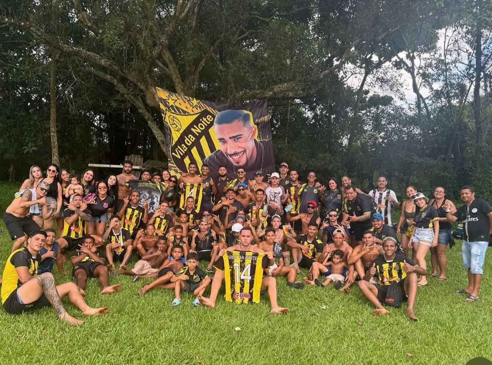
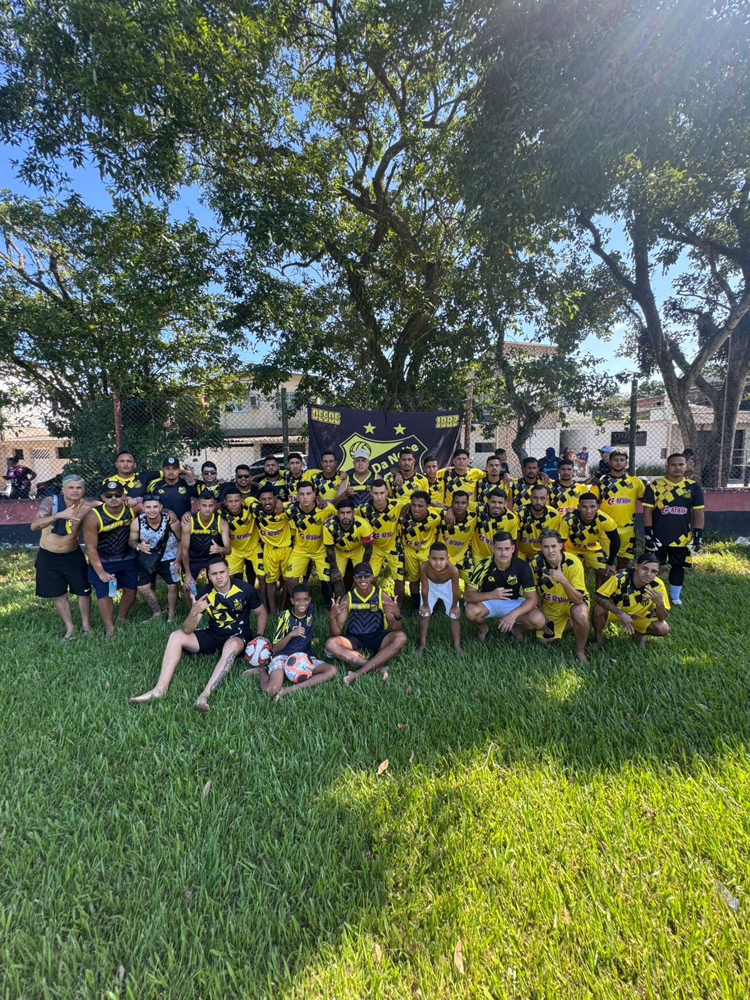
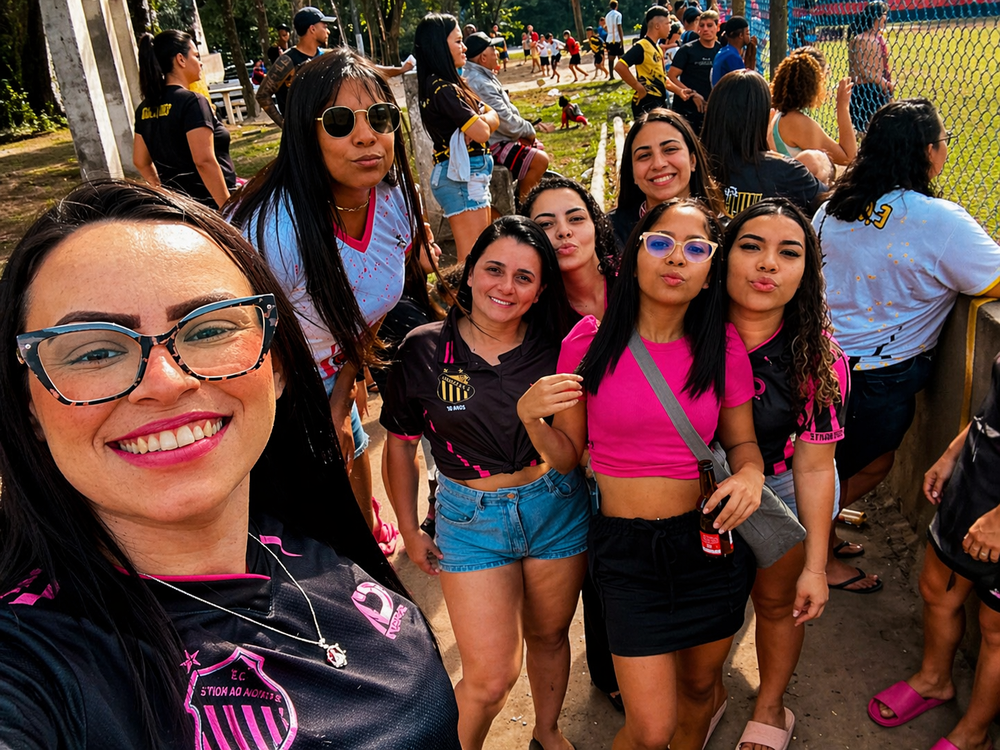
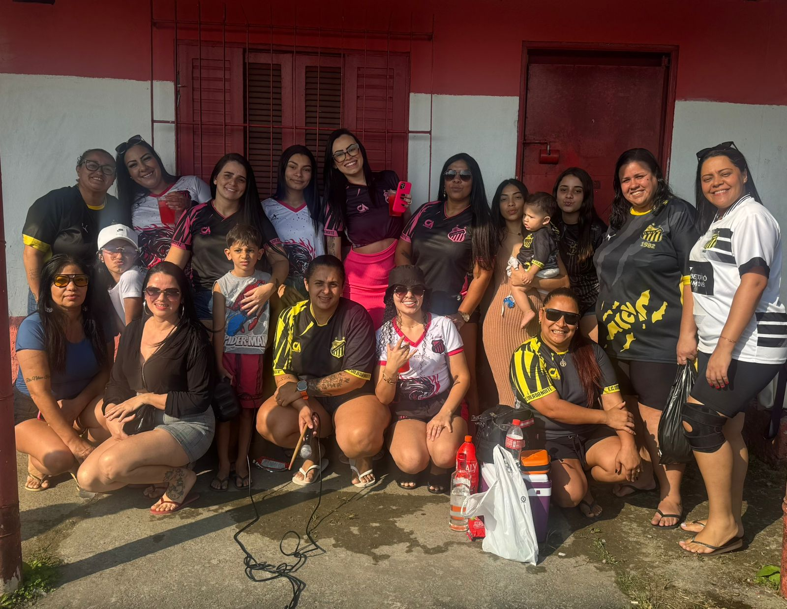

Paixão em cada jogo
A torcida masculina representa força, presença e apoio constante em cada partida, ajudando a empurrar o time em todos os momentos.
A torcida é a força que acompanha o clube em cada jogo, em cada desafio e em cada conquista. Aqui, cada voz ajuda a fazer o Vila da Noite ser maior.
O clube cresce junto com quem veste, canta e apoia.
A torcida do E.C Vila da Noite é parte fundamental da identidade do clube. Ela representa paixão, presença, energia e fidelidade em todos os momentos.
Mais do que acompanhar partidas, a torcida carrega o nome do clube, fortalece sua imagem e transforma cada jogo em uma experiência ainda mais marcante.
Seja na arquibancada, nas ruas, nas redes sociais ou vestindo as cores oficiais, os torcedores ajudam a construir a história do Vila da Noite todos os dias.
Espaço dedicado à energia, presença e apoio dos torcedores do clube.
A torcida masculina representa força, presença e apoio constante em cada partida, ajudando a empurrar o time em todos os momentos.
Vestir as cores do Vila da Noite é carregar a identidade do clube com orgulho e mostrar que a arquibancada também faz parte do jogo.


Espaço dedicado às torcedoras que fortalecem o clube com presença e paixão.
A torcida feminina também é parte essencial do Vila da Noite, trazendo apoio, estilo e personalidade para a história do clube.
Cada torcedora ajuda a construir uma arquibancada mais forte, mais bonita e ainda mais marcante para o clube.


Mais do que torcer, é representar.
Estar com o clube em cada fase, em cada jogo e em cada desafio.
Carregar preto e amarelo com orgulho dentro e fora do campo.
Fazer parte da energia e da identidade do E.C Vila da Noite.
Mostrar que o clube tem uma torcida forte, presente e marcante.
Acompanhe o clube nas redes sociais, fale com a equipe e fortaleça ainda mais a torcida.